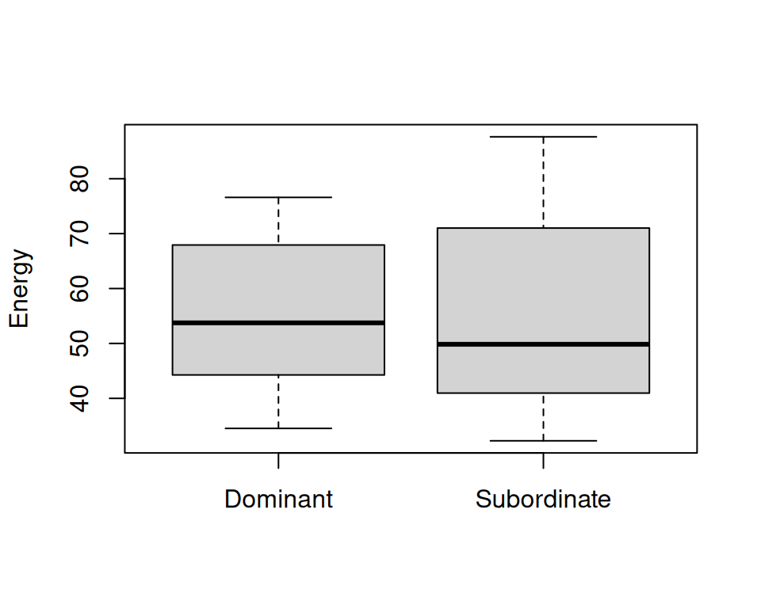
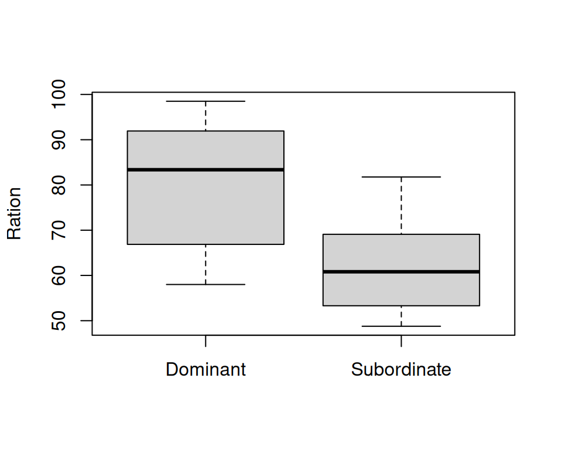
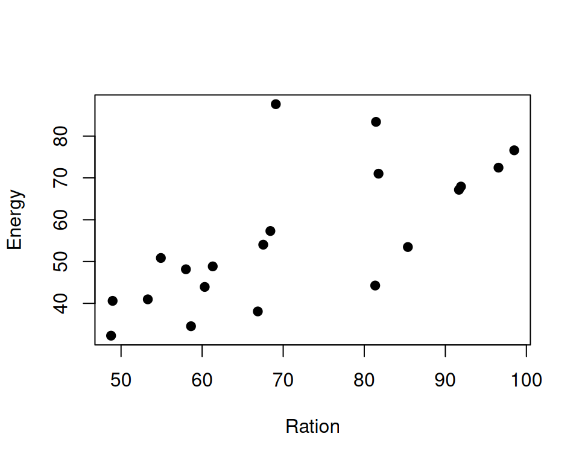
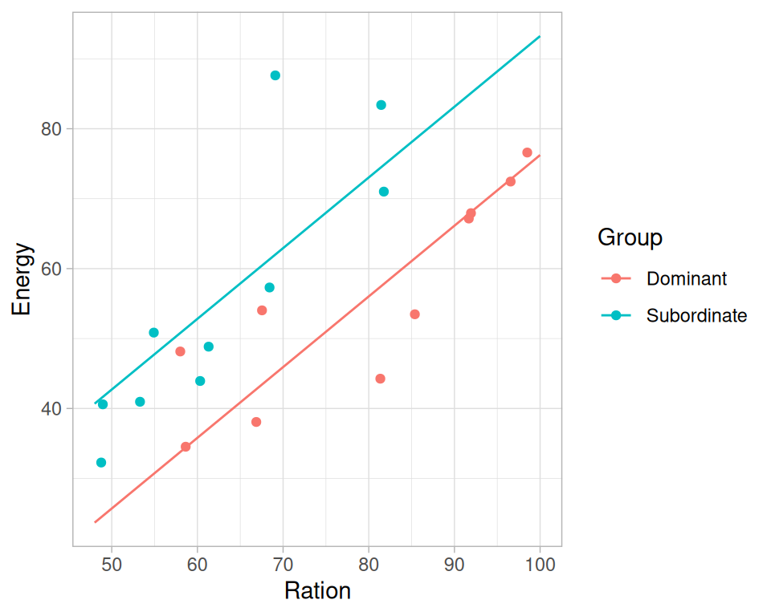
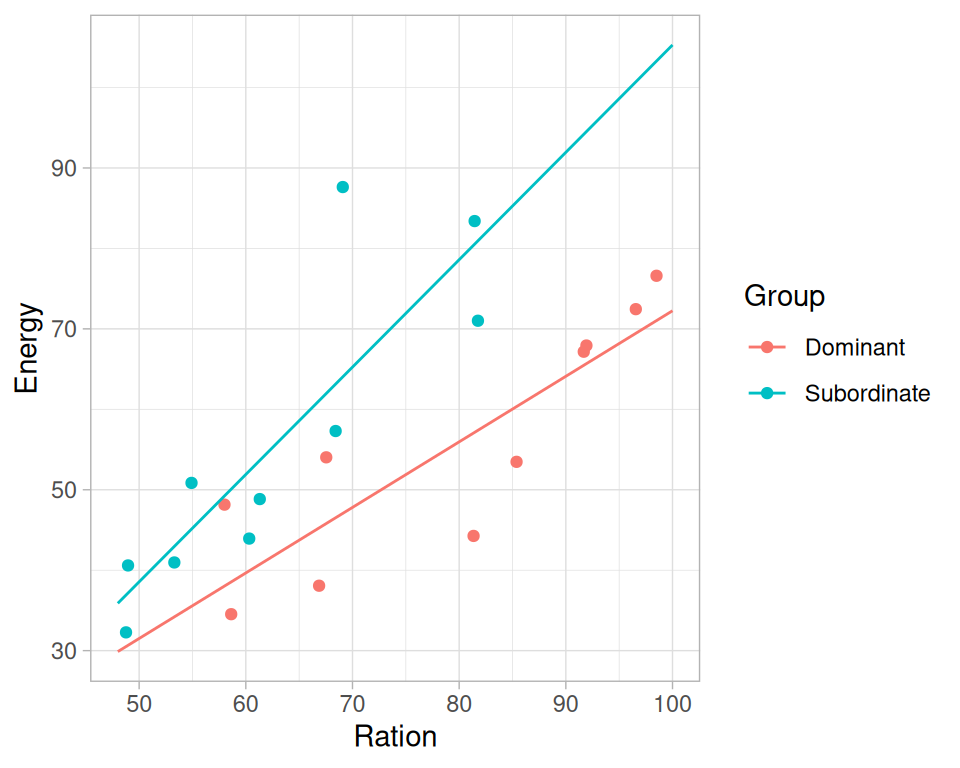

initial redn drug
1 158 4 1
2 176 21 1
3 174 36 1
4 168 14 1
5 174 34 1
6 186 37 1Exercises (regression coefficients)
Data for exercises are on Canvas under Files -> data_exercises –> linear-models
Exercise 1 (Height-weight-gender)
- repeat fitting the models with a) gender, b) weight and gender and c) interaction between weight and gender
- given the model with the interaction term, what is expected height of a man and a women given a weight of 120 lbs?
- can you use predict() function to check your calculations?
Exercise 2 (Trout) When the behavior of a group of trout is studied, some fish are observed to become dominant and others to become subordinate. Dominant fish have freedom of movement whereas subordinate fish tend to congregate in the periphery of the waterway to avoid crossing the path of the dominant fish. Data on energy expenditure and ration of blood obtained were collected as part of a laboratory experiment for 20 trout. Energy and ration is measured in calories per kilo-calorie per trout per day.
Use the below code to load the data to R and use linear regression models to answer:
- is there a relationship between ration obtained and energy expenditure
- is the relationship between ration obtained and energy expenditure different for each type of fish?
- Hint: it is good to start with some explanatory plots between every pair of variable
Exercise 3 (Lowering blood pressure) A clinical trial has been carried out to compare three drug treatments which are intended to lower blood pressure in hypertensive patients. The data contains initial values fo systolic blood pressure (bp) in mmHg for each patient and the reduction achieved during the course of the trial. For each patient, allocation to treatment (drug) was carried out randomly and conditions such as the length of the treatment and dose of the drug were standardized as far as possible.
Use linear regression to answer questions:
- is there an association between the reduction in blood pressure and initial blood pressure
- is reduction in blood pressure different across the treatment (in three drug groups)?
- is reduction in blood pressure different across the treatment when accounting for initial blood pressure?
- is reduction in blood pressure changing differently under different treatment? Hint: here we have three categories which can be seen as expanding the model with two categories by an additional one: one category will be treated as baseline
Answers to selected exercises
Solution. Exercise 1
Gender Height Weight
1 Male 73.84702 241.8936
2 Male 68.78190 162.3105
3 Male 74.11011 212.7409
4 Male 71.73098 220.0425
5 Male 69.88180 206.3498
6 Male 67.25302 152.2122use equations to find the height for men and women respectively: \[E(height|male\; and \; weight=x)=47.34778 - 1.68367 + 0.12043x + 0.00449x = 45.7 + 0.125x\] \[E(height|female\; and \; weight=x)=47.34778 + 0.12043x\]
1
60.65427 1
61.79882 Solution. Exercise 2
## Energy Ration Group
## 1 44.26 81.35 Dominant
## 2 67.16 91.68 Dominant
## 3 48.15 58.00 Dominant
## 4 34.53 58.63 Dominant
## 5 67.93 91.93 Dominant
## 6 72.45 96.56 Dominant


- From the exploratory plots we see that there is some sort of relationship between ratio and energy, i.e. energy increase while ration obtained increases
- From box plots we see that the ration obtained may be different in two groups
##
## Call:
## lm(formula = Energy ~ Ration, data = trout)
##
## Residuals:
## Min 1Q Median 3Q Max
## -18.704 -4.703 -0.578 2.432 33.506
##
## Coefficients:
## Estimate Std. Error t value Pr(>|t|)
## (Intercept) 4.3037 12.5156 0.344 0.734930
## Ration 0.7211 0.1716 4.203 0.000535 ***
## ---
## Signif. codes: 0 '***' 0.001 '**' 0.01 '*' 0.05 '.' 0.1 ' ' 1
##
## Residual standard error: 12.05 on 18 degrees of freedom
## Multiple R-squared: 0.4953, Adjusted R-squared: 0.4673
## F-statistic: 17.66 on 1 and 18 DF, p-value: 0.0005348
##
## Call:
## lm(formula = Energy ~ Ration + Group, data = trout)
##
## Residuals:
## Min 1Q Median 3Q Max
## -13.130 -5.139 -0.870 2.199 25.622
##
## Coefficients:
## Estimate Std. Error t value Pr(>|t|)
## (Intercept) -24.8506 13.3031 -1.868 0.07910 .
## Ration 1.0109 0.1626 6.218 9.36e-06 ***
## GroupSubordinate 17.0120 5.1075 3.331 0.00396 **
## ---
## Signif. codes: 0 '***' 0.001 '**' 0.01 '*' 0.05 '.' 0.1 ' ' 1
##
## Residual standard error: 9.647 on 17 degrees of freedom
## Multiple R-squared: 0.6946, Adjusted R-squared: 0.6587
## F-statistic: 19.33 on 2 and 17 DF, p-value: 4.182e-05
## Warning: `aes_string()` was deprecated in ggplot2 3.0.0.
## ℹ Please use tidy evaluation idioms with `aes()`.
## ℹ See also `vignette("ggplot2-in-packages")` for more information.
## ℹ The deprecated feature was likely used in the ggiraphExtra package.
## Please report the issue to the authors.
##
## Call:
## lm(formula = Energy ~ Ration * Group, data = trout)
##
## Residuals:
## Min 1Q Median 3Q Max
## -12.7951 -6.0981 -0.1554 3.9612 23.5946
##
## Coefficients:
## Estimate Std. Error t value Pr(>|t|)
## (Intercept) -9.2330 15.9394 -0.579 0.570483
## Ration 0.8149 0.1968 4.141 0.000767 ***
## GroupSubordinate -18.9558 22.6934 -0.835 0.415848
## Ration:GroupSubordinate 0.5200 0.3204 1.623 0.124148
## ---
## Signif. codes: 0 '***' 0.001 '**' 0.01 '*' 0.05 '.' 0.1 ' ' 1
##
## Residual standard error: 9.214 on 16 degrees of freedom
## Multiple R-squared: 0.7378, Adjusted R-squared: 0.6886
## F-statistic: 15 on 3 and 16 DF, p-value: 6.537e-05
Based on the regression output and plots we can say:
- there is a relationship between ration obtained and energy expenditure
- that this relationship is the same in the two groups although the energy expenditure is higher in the dominant fish
Solution. Exercise 3
Yes. The redn and initial were significantly associated (p-value = 0.00312, linear regression).
##
## Call:
## lm(formula = redn ~ initial, data = blooddrug)
##
## Residuals:
## Min 1Q Median 3Q Max
## -23.476 -11.705 1.558 9.197 24.392
##
## Coefficients:
## Estimate Std. Error t value Pr(>|t|)
## (Intercept) -72.7302 29.1879 -2.492 0.02036 *
## initial 0.5902 0.1788 3.301 0.00312 **
## ---
## Signif. codes: 0 '***' 0.001 '**' 0.01 '*' 0.05 '.' 0.1 ' ' 1
##
## Residual standard error: 12.79 on 23 degrees of freedom
## Multiple R-squared: 0.3214, Adjusted R-squared: 0.2919
## F-statistic: 10.89 on 1 and 23 DF, p-value: 0.003125No. The drug2 and drug3 were not significantly different from drug1 (p-value = 0.714 and p-value = 0.628, respectively). The patients of the drug 1 group had 2.750 higher blood pressure drop (redn) than those of the drug 2 group. However, the difference was relatively small comparing to the standard error of the estimate, which was 7.402. The difference between drug 1 and 3 was relatively small, too.
##
## Call:
## lm(formula = redn ~ drug, data = blooddrug)
##
## Residuals:
## Min 1Q Median 3Q Max
## -32.000 -9.286 0.000 12.714 26.000
##
## Coefficients:
## Estimate Std. Error t value Pr(>|t|)
## (Intercept) 23.250 5.517 4.214 0.000358 ***
## drug2 2.750 7.402 0.372 0.713796
## drug3 -3.964 8.076 -0.491 0.628379
## ---
## Signif. codes: 0 '***' 0.001 '**' 0.01 '*' 0.05 '.' 0.1 ' ' 1
##
## Residual standard error: 15.6 on 22 degrees of freedom
## Multiple R-squared: 0.03349, Adjusted R-squared: -0.05437
## F-statistic: 0.3812 on 2 and 22 DF, p-value: 0.6875Yes. The redn of the drug2 group was significantly higher than that of the drug1 group after adjustment for the effects of the initial (P = 0.018). The reduction of the patients who got the drug 2 was much higher (13.6906) than the drug 1, comparing to the standard error of the difference (5.3534) after accounting for initial blood pressure.
##
## Call:
## lm(formula = redn ~ drug + initial, data = blooddrug)
##
## Residuals:
## Min 1Q Median 3Q Max
## -15.8114 -10.5842 -0.4959 6.2834 16.4265
##
## Coefficients:
## Estimate Std. Error t value Pr(>|t|)
## (Intercept) -124.8488 28.0674 -4.448 0.000223 ***
## drug2 13.6906 5.3534 2.557 0.018346 *
## drug3 -7.2045 5.4275 -1.327 0.198625
## initial 0.8895 0.1671 5.323 2.81e-05 ***
## ---
## Signif. codes: 0 '***' 0.001 '**' 0.01 '*' 0.05 '.' 0.1 ' ' 1
##
## Residual standard error: 10.42 on 21 degrees of freedom
## Multiple R-squared: 0.5886, Adjusted R-squared: 0.5298
## F-statistic: 10.01 on 3 and 21 DF, p-value: 0.0002666